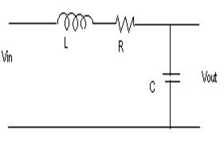
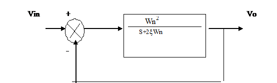

7.1.1: Title of the experiment: Frequency response and transient response of a second order
System
7.1.2: Aim of the experiment: To study the frequency response and transient
response of second order system using RLC circuit, for a step input.
7.1.3: List of equipments:
Sl no Item Specification Quantity
1) AFO 10Hz-1MHz/15Vrms 1
2) C R O 0 –20MHz/80Vp-p 1
3) Inductor 70mH 1
4) Capacitor 0. 01MF. 1
5) Resistors 2k, 6.3k, 5.3k 1 each
7.1.4: Experimental setup:

for z <1 for z >1 for z =1
L=70mH L=70mH L=70mH
C=0.01μf C=0.01μf C=0.01μf
R=2KΩ R=6.3KΩ R=5.3KΩ
7.1.5: Theory:
The closed loop transfer Funston for second order system is given by
Vo(s) Wn2
---------------- = ---------------------------------
Vi(s) S2 +2 ξ WnS +Wn2
 Vo
We have
V0 1
----- - = --------------
Vi LCS2 +RCS +1
Comparing this equation with second order system Transfer fuction is:
C(S) Wn2
------ = --------------
R(S) S2+2 ξWns +Wn2
The dynamic behavior of second order system can be described in terms of two parameters ξ & Wn.
If 0 < ξ < 1 the closed loop poles are complex conjugates and lie in the left half of splane the system is called as under damped and the transient response is oscillatory
The system is which is having ξ =1 the system is called critically damped the over damped system corresponds to ξ =1 the transient response of critically damped and over damped system do not oscillate if ξ =0 the transient response does not die out.
The transient response of 2nd order system is done by considering following .1) delay time 2) Rise time 3) peak time 4) Maximum overshoot 5) settling time
Delay time (td): The delay time is time required for the response to reach half the final
Value the very first time.
Rise time: (Tr): Time required for response to rise from 10% to 90% of its final value.
Peak time (Tp): The peak time is the time required for the response to reach the first peak of the over shoot
Maximum Over shoot (Mp): It is the maximum peak value of the response curve measured from unity. It is delayed by
Mp= C (tp) – C (∞) x 100 %
------------------
C(∞)
Settling time: The settling time is the time required to for the response curve to reach & stay with in a range about the final value of size specified by absolute % of final value.
7.1.6: Design equations:
1 R C
Wn = -------- ξ = ----- √ ----
√LC 2 L
θ = tan-1 √1- ξ2
-------
ξ
Wd = Wn √1- ξ2
Tr = Π– θ
--------
Wd
1) For ξ= 0.37 i.e. <1, C=0.01x10uf and L=70mH
0.37 = R 0.01X10-6
----- √ -----------
2 70 x 10-3
R = 2K
Π– θ
Tr = ---------
Wd
Π – tan-1 (√1-(0.37)2
---------
0.37
Tr = ------------------------------- ----------
1
-------------- x (√1-(0.37)2
√70x10-3x0.01x10-6
= 56 μ Sec
Mp = e -Π ξ / √ 1- ξ2 x 100
= e - Π(0.37) / √ 1-(0.37)2 x 100
= 0.286 x 100
= 28.6%
4
Ts = ----- for 2% tolerance
ξ Wn
4
= -----
(0.37) 1
-------
26.45 x 10-6
Designed valves for ξ < 1
L = 70 mH
Fre = 570 Hz
C = 0.01μF
R= 2 KΩ
ξ = 0.37
2) For ξ > 1(over damped)
R 0.01 μF
1.2 = ----√ ------------
R = 6.3 KΩ
Designed values
ξ = 1.2
R = 6.3 KΩ
C = 0.01 μF
Fre = 570 Hz
L = 70 mH
3) For ξ = 1(critically damped)
R 0.01 x 10-6
1 = -----√ --------------
2 70 x 10-3
R = 5.3 KΩ.
Designed values
Fin = 570 Hz
R = 5.3 KΩ
L = 70 mH
C = 0.01 μF
ξ = 1
4) For ξ = 0
R = 0
7.1.7: Procedure:
1) Circuit connections are made as shown in circuit diagram
2) The T.F of second order system is compared with T.F of the given circuit and for
different values of ξ, the resistance values are calculated.
3) The input is given through AFO & output is observed on CRO.
4) The frequency response for ξ = 1 is determined.
5) The transient response of the system is observed on digital storage oscilloscope, for
different ξ values i.e. less than 1, greater than 1& equal to 1.
6) The transient specifications for different values of ξ are calculated.
7) Plot frequency v/s phase and frequency v/s output voltage.
7.1.8: Table of observation:
a) Frequency response
Vpp = 1V (constant)
fin (Hz ) |
Vo(volts) |
Phase(degrees) |
|
|
|
b) Transient response:
(To be noted from DSO)
Tr = μ Sec
Vpp = V
Mp = mV
Ts = m sec
Tr = μ Sec
Vpp= V
Tr = μ Sec
Vpp = V
Tr = u Sec
Vp-p= V.
7.1.9: Specimen calculations: ------not required----
7.1.10: Plotting of Graph:
Frequency response:
Gain Vs Frequency Phase Vs frequency
Transient response
7.1.11: Conclusion:
The frequency response of 2nd order shows that as a frequency will increase the output will decreases and also from the transient response, we have observed the various parameters like delay time, rise time, peak time, settling time.